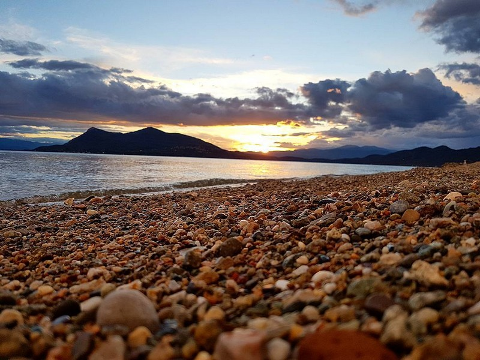
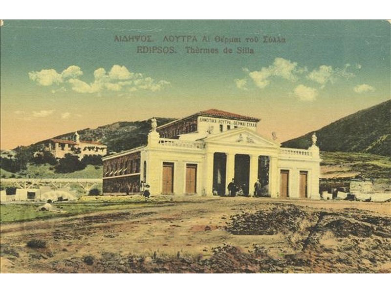

Παραλίες
Τα πασίγνωστα νερά της παραλίας της Αιδηψού είναι το πρώτο πράγμα που παρατηρεί ο επισκέπτης: θερμά νερά που ρέουν ελεύθερα στη γαλάζια θάλασσα του Ευβοϊκού κόλπου. Εκτός από τις θεραπευτικές τους ιδιότητες, λόγω της μοναδικής τους σύστασης προσφέρουν τη δυνατότητα αποτοξίνωσης και χαλάρωσης.
Μέσα στην Αιδηψό υπάρχουν και παραλίες ιδανικές για οικογένειες με μικρά παιδιά, αφού το νερό δεν είναι κρύο, δεν υπάρχουν ρεύματα και δεν έχει απότομο βάθος. Με την εναλλαγή από άμμο, βότσαλο και βράχο, ο επισκέπτης βρίσκει το ιδανικό σημείο για το μπάνιο του.

Οργανωμένη παραλία έως τη Ριβιέρα
Μία από τις πιο πολυσύχναστες παραλίες της περιοχής, λίγο έξω από την πόλη. Εκτείνεται σχεδόν 2 χιλιόμετρα και τελειώνει στην τοποθεσία Ριβιέρα, με beach bars, ταβέρνες, ουζερί και θαλάσσια σπορ.
Λιχαδονήσια
Ένας καλά κρυμμένος παράδεισος με τιρκουάζ νερά και ξανθιά άμμο: συστάδα 7 μικρών νησίδων στα βορειοδυτικά της Εύβοιας, ιδανική για μονοήμερες θαλάσσιες εκδρομές.
Γνωστές παραλίες
Γρεγολίμανο, Χρυσή Ακτή, Πόρτο Πεύκο, Παραλία Μύλου, Παραλία Φτέρης, Αγ. Νικόλαος και η Πλαζ Λουτρών Αιδηψού.
Οι νησίδες των Λιχαδονησίων είναι αποτέλεσμα ηφαιστειακής δραστηριότητας και μεγάλο τμήμα τους βυθίστηκε από σεισμό το 426 π.Χ.
Μνημεία

Υδροθεραπευτήριο Αγίων Αναργύρων. Το παλαιό υδροθεραπευτήριο, έργο του Ερνέστο Τσίλλερ, είναι ένα στολίδι νεοκλασικής αρχιτεκτονικής που θυμίζει εποχές όπου η λουτρόπολη της Αιδηψού δέσποζε στη Μεσόγειο.
Αρχαιολογική Συλλογή. Εκτίθεται σε αίθουσα του υδροθεραπευτηρίου ΕΟΤ και περιλαμβάνει θησαυρούς που ήρθαν στο φως από τις ανασκαφές.
Δημαρχείο Αιδηψού. Νεοκλασικό κτίριο που χρησίμευσε και ως Γυμνάσιο και Λύκειο πριν γίνει Δημαρχείο.
Η σπηλιά του Σύλλα
Ένα από τα σωζόμενα ευρήματα της ρωμαϊκής περιόδου είναι τα λουτρά στη «Σπηλιά του Σύλλα», πίσω από το υδροθεραπευτήριο του ΕΟΤ, κοντά στην εκκλησία των Αγίων Αναργύρων. Είναι ένα μικρό οικοδόμημα με τρούλο, εξ ολοκλήρου καλυμμένο από τις αποθέσεις των θειούχων υδάτων, που δίνει την εντύπωση εισόδου σπηλιάς.
Στην είσοδο βρίσκονται δύο ογκώδη βάθρα αγαλμάτων με επιγραφές προς τιμήν των Ρωμαίων αυτοκρατόρων Ανδριανού και Σεπτιμίου Σεβήρου, αφιερωμένες από το δήμο Ιστιαίας. Το πρώτο φέρει και μεταγενέστερη επιγραφή προς τιμήν του αυτοκράτορα Κωνσταντίνου. Η σπηλιά συνδέθηκε με το Ρωμαίο στρατηγό Σύλλα, που επισκεπτόταν τα λουτρά για θεραπεία.
Εναλλακτικός τουρισμός
Θρησκευτικός τουρισμός
Μονή Αγίου Γεωργίου Ηλίων
Η γυναικεία μονή βρίσκεται σε πανοραμική τοποθεσία στο όρος Τελέθριο, μεταξύ των βουνών Βαλάντι (883 μ.) και Γυμνό (748 μ.), με θέα την απεραντοσύνη του ουρανού και της θάλασσας. Στη μονή υπάρχουν τίμια λείψανα των Αγίων Γεωργίου, Μαρίνης, Μάμαντος και Κυριακής.
Το Καθολικό είναι βυζαντινού ρυθμού, με τρούλο και νάρθηκα. Το ξυλόγλυπτο τέμπλο, αριστούργημα ξυλογλυπτικής, φέρει χρονολογία κατασκευής 1834. Μέσω της βυζαντινής κατακόμβης ο προσκυνητής οδηγείται με υπόγειο θολωτό διάδρομο στο ναΐδριο του Αγίου Ιωάννη του Προδρόμου. Επί αιώνες ήταν ανδρική μονή και το 1970 μετατράπηκε σε γυναικεία. Εικάζεται ότι κτίστηκε στα ερείπια αρχαίου ναού του Απόλλωνα, ενώ η επικρατέστερη άποψη τοποθετεί την ίδρυσή της το 1259 μ.Χ.
Ναός και Σκήνωμα του Αγίου Ιωάννη του Ρώσου
Ο Όσιος Ιωάννης ο Ρώσος γεννήθηκε σε χωριό της νότιας Ρωσίας γύρω στο 1690. Αιχμαλωτίστηκε στον Ρωσοτουρκικό Πόλεμο του 1710-1711 και πουλήθηκε σε Οθωμανό αξιωματικό στο Προκόπι της Καππαδοκίας. Παρά τις πιέσεις δεν άλλαξε την πίστη του και με την ταπείνωση και την αγιότητά του κέρδισε τον σεβασμό όλων. Το σκήνωμά του φυλάσσεται στον ναό του στη Βόρεια Εύβοια.
Μονή Οσίου Δαυΐδ
Ο Όσιος Δαυΐδ, από τη Γαρδινίτζα, έκτισε κοντά στο χωριό Ροβιές Ναό της Μεταμορφώσεως του Κυρίου και ίδρυσε μονή, όπου συνέρρευσαν πολλοί μοναχοί. Στη μονή μόνασε, κοιμήθηκε και ενταφιάστηκε ένας από τους τρεις σύγχρονους αγίους, ο πατήρ Ιάκωβος (1920-1991). Σε απόσταση χιλιομέτρου βορείως βρίσκεται το «Αγιονέρι», όπου κατά την παράδοση ο Όσιος χτύπησε με το ραβδί του το βράχο και ανέβλυσε ιαματικό νερό. Σε 20 λεπτά με τα πόδια νότια υπάρχει το «Ασκητήριο» του Οσίου, ένα μικρό σπήλαιο με το παρεκκλήσιο του Αγ. Χαραλάμπους.
Οινοτουρισμός
Το οινοποιείο Vrinioti Wines βρίσκεται στα Γιάλτρα Αιδηψού, 15 χιλιόμετρα από την Αιδηψό, σε ένα σύγχρονο οινοποιείο ανοιχτό όλες τις ημέρες του χρόνου για επισκέψεις. Η περιήγηση ξεκινά με σύντομη ξενάγηση και ενημέρωση για την παραγωγική διαδικασία και καταλήγει στο χώρο γευσιγνωσίας, όπου ο επισκέπτης μπορεί να δοκιμάσει ή να προμηθευτεί τα προϊόντα.
Δραστηριότητες στη φύση και στη θάλασσα
Θαλάσσια σπορ και ψάρεμα
Θαλάσσιο σκι, kite surf, τζετ σκι και σέρφινγκ το καλοκαίρι. Οι ερασιτέχνες ψαράδες βρίσκουν θέση στους μόλους και οι λάτρεις του υποβρύχιου ψαρέματος έναν πλούσιο βυθό.
Πεζοπορία
Ενδεικτικά μονοπάτια και τοποθεσίες: Ξηρόν όρος, καταρράκτες του Δρυμώνα, Ξηρόν όρος Τελέθριον (Καστανιώτισσα - Σήμια) και Λιχάδα.
Ιππασία
Το Κέντρο Ιππασίας στις Καματριάδες, στο όρος Τελέθριο, μόλις 20 λεπτά από τα Λουτρά, με καφέ-εστιατόριο, δραστηριότητες και διαμονή.
Ποδηλασία
Η Αιδηψός είναι σχετικά επίπεδη και ενδείκνυται για ποδηλασία. Κάθε χρόνο διοργανώνονται ποδηλατικοί αγώνες με έναρξη και τερματισμό στα Λουτρά.
Ορειβασία
Η εξαιρετική δομή των ορεινών όγκων προσφέρει ανεπανάληπτες εμπειρίες σε όλη την περιοχή.
Κυνήγι
Ο κυνηγετικός σύλλογος, με τον πρόσφατο εμπλουτισμό της πανίδας, εξυπηρετεί τους φίλους του κυνηγιού σε όλη τη διάρκεια του έτους.
Μουσεία
Μάθετε για την ιστορία της Βόρειας Εύβοιας, τον πολιτισμό και τα έθιμά της. Δείτε τα εργαλεία που χρησιμοποιούσαν αιώνες πριν και τις τοπικές ενδυμασίες στα λαογραφικά μουσεία της Βόρειας Εύβοιας (Άγιος Αιδηψού, Ιστιαία, Ωρεοί, Λίμνη, Αγία Άννα, Μαντούδι).
- Μουσείο του δάσους στο Προκόπι, για την πανίδα και τα δάση της περιοχής.
- Μουσείο του Κυνηγετικού Συλλόγου Ιστιαίας, για τα άγρια ζώα και τα πουλιά.
- Μουσείο Απολιθωμένων Θηλαστικών Κερασιάς, ένα ταξίδι εκατομμύρια χρόνια πίσω.
Το Λαογραφικό Μουσείο Αγίου (Λ.Μ.Α.) ιδρύθηκε από τον Σύλλογο Γονέων και Κηδεμόνων του Δημοτικού Σχολείου και Νηπιαγωγείου Αγίου και αναγνωρίστηκε στις 31/01/2006. Σκοπός του είναι η διάσωση, προστασία και προβολή των στοιχείων του λαϊκού πολιτισμού, των παραδόσεων και των εθίμων του Αγίου και της Βόρειας Εύβοιας. Μέχρι σήμερα 80 οικογένειες έχουν δωρίσει αντικείμενα, όπως γεωργικά εργαλεία, οικιακά έπιπλα και σκεύη, είδη προικός, κέρματα, φωτογραφίες και παλαιά έγγραφα.
Τοπικά προϊόντα
Ζυμαρικά
Χειροποίητες χυλοπίτες και τραχανάς ξινός και γλυκός, από τοπικές βιοτεχνίες.
Μέλι και βασιλικός πολτός
Το μέλι της Βόρειας Εύβοιας θεωρείται από τα πιο αγνά και άριστης ποιότητας.
Γλυκά
Λουκουμάδες με μέλι και καρύδια ή με σοκολάτα, γλυκά του κουταλιού, γλυκά ταψιού και κουραμπιέδες.
Κρασί
Οι εύφορες εκτάσεις της Βόρειας Εύβοιας ευνοούν αρκετές αξιόλογες ποικιλίες αμπελιού.
Λάδι και ελιές
Ποιοτικό λάδι και ελιές πράσινες, σπαστές, ξιδάτες και πατητές στα τοπικά καταστήματα και τις λαϊκές αγορές.
Σύκα Ταξιάρχη
Ξηρά σύκα «Ταξιάρχης Β. Εύβοιας» από συκόδεντρα της ποικιλίας Σμυρνέικη, που καλλιεργούνται μόνο στη γεωγραφική ζώνη των κοινοτήτων της περιοχής.